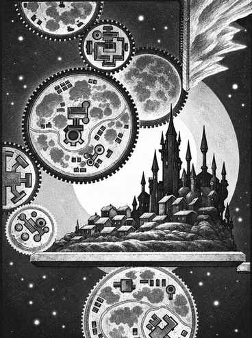

尼瓦尔 · Nirvana
尼瓦尔是终极秩序的位面。它由无数互相啮合的巨大圆盘组成，每个圆盘都有自己的重力，圆盘边缘相接，缓慢旋转。圆盘上有城市、齿轮、道路和精确排列的居民；跨越圆盘边缘时，重力会转向新的方向。
尼瓦尔最常见的居民是机械化的魔冉（modrons）。它们依照等级和程序行动，维护位面的秩序。最高统治者普里穆斯（Primus）居住在自己的领域，负责所有魔冉的法令和改造。圆盘之间存在许多通往星界、原初位面和其他外层位面的门。

尼瓦尔也包含阿努（Anu）、商-ti（Shang-Ti）等神话体系的领域。它们的居民关注法律、判断、知识和宇宙平衡；旅行者若能证明自己遵守秩序，可能获得向导和安全通行，但欺骗、偷窃和无计划的破坏会迅速引来执法者。